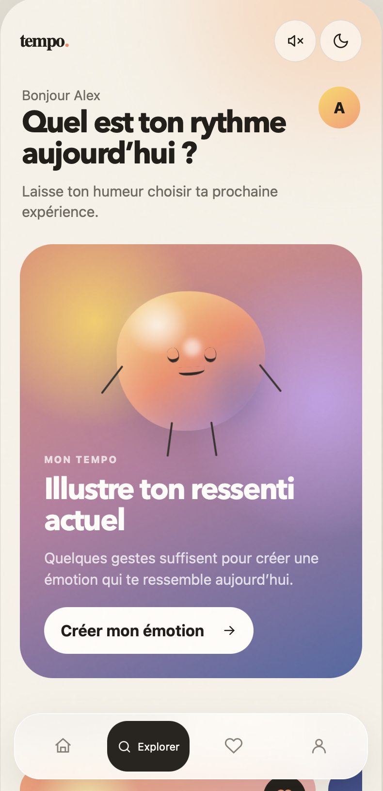
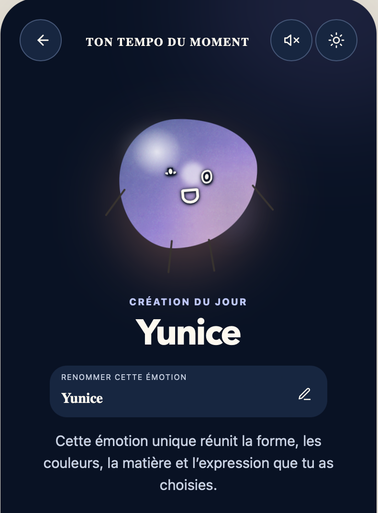
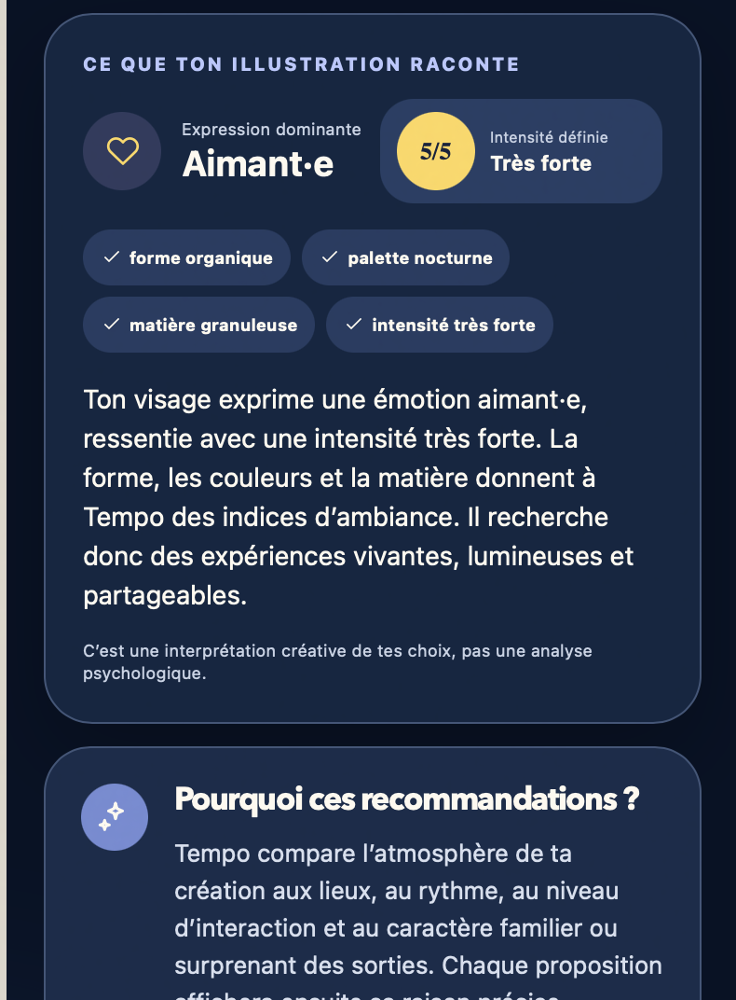
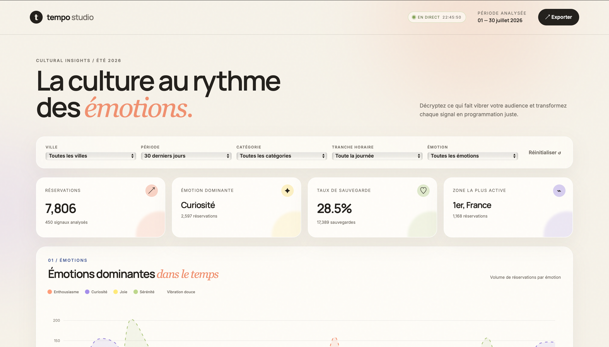
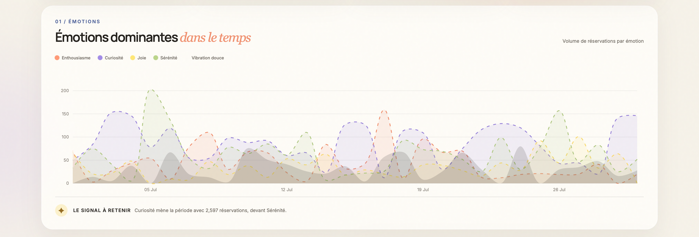
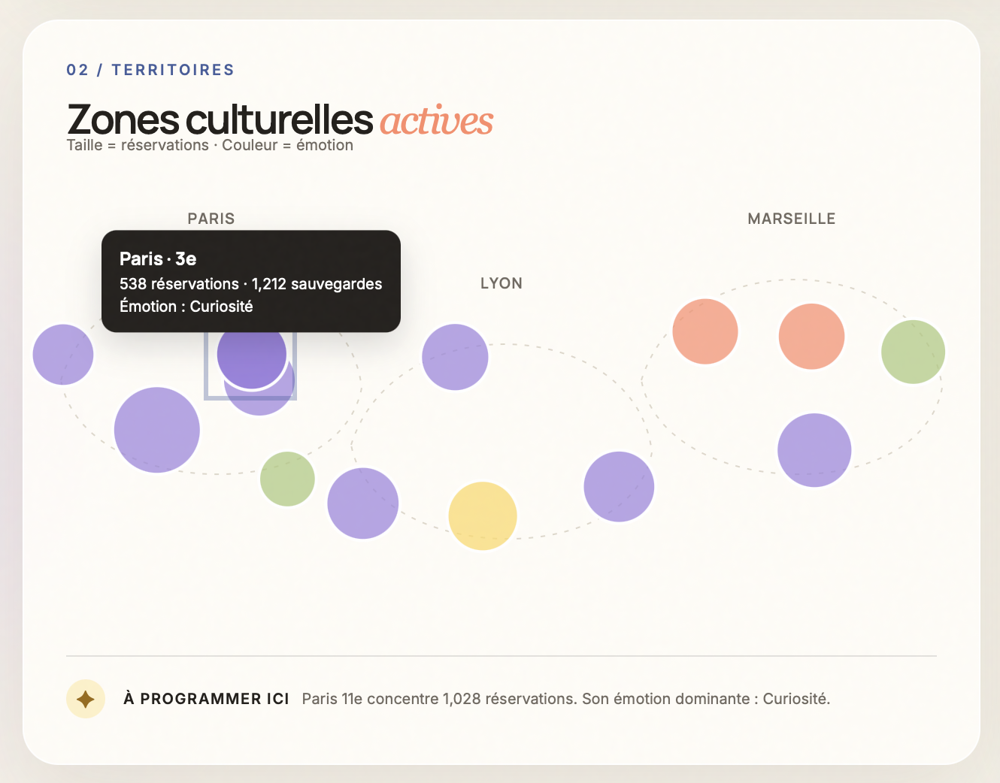
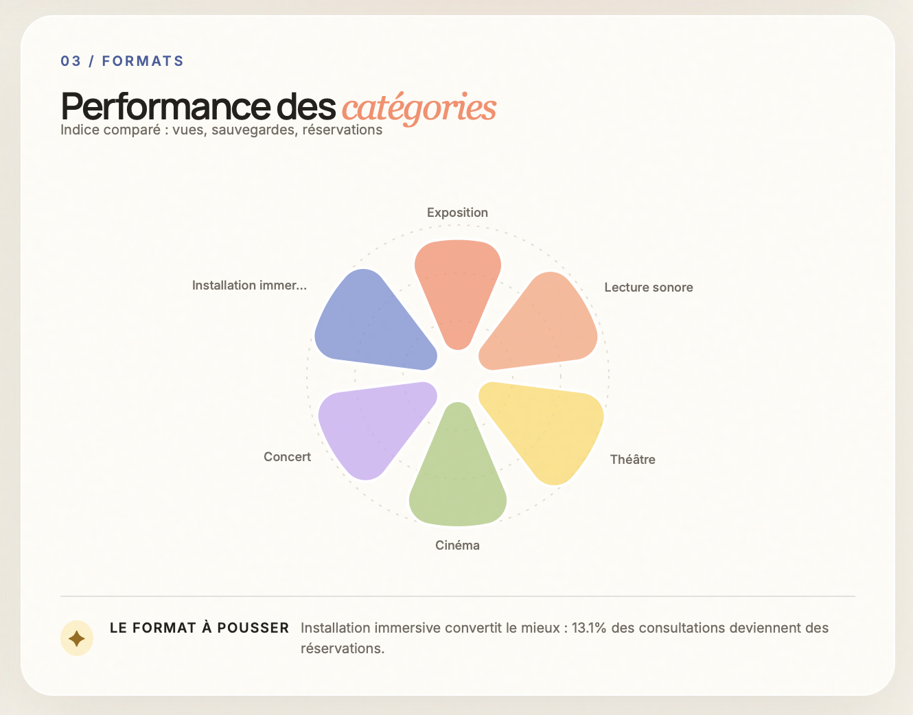
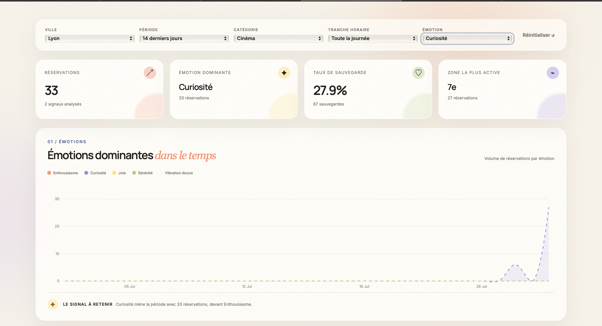

Insight de conception
« Je ne sais pas toujours ce que je veux faire, mais je sais comment je me sens et ce que je veux ressentir. »
Cette phrase constitue un insight de conception et non le verbatim d’une personne interrogée.
Web Design Document
La culture au rythme de vos émotions
Tempo est une application mobile culturelle qui recommande des sorties en fonction de l’état émotionnel de l’utilisateur.
Plutôt que de lui demander ce qu’il souhaite voir, l’expérience l’invite à représenter visuellement son ressenti afin de lui générer un profil émotionnel qui donnera lieu à des recommandations adaptées.
02 / 12
Le numérique occupe désormais une place centrale dans l’accès aux contenus et aux pratiques culturelles. L’enquête « Pratiques culturelles » du ministère de la Culture, menée en 2018 auprès de plus de 9 200 personnes en France métropolitaine, met en évidence la progression durable des usages numériques et leur place particulièrement importante chez les jeunes générations. Elle montre également que ces usages coexistent avec des pratiques culturelles physiques telles que le cinéma, les concerts, les spectacles ou les visites patrimoniales. [1][2] ↗
Les plateformes de découverte culturelle organisent généralement leur offre à partir de critères comme la localisation, la date, la catégorie, le lieu, l’artiste ou les préférences déjà exprimées. Cette logique se retrouve par exemple dans le pass Culture, Eventbrite ou Shotgun, qui permettent de parcourir et réserver des événements à partir de catalogues structurés. [15][16][17] ↗
Ces outils sont particulièrement efficaces lorsqu’une personne sait déjà ce qu’elle recherche. Ils répondent moins directement à une autre situation : avoir envie de sortir, tout en étant incapable de nommer précisément l’activité, l’ambiance ou le lieu souhaité.
Une offre abondante ne rend pas nécessairement la décision plus simple. Des travaux consacrés à la « surcharge de choix » ont montré qu’un nombre élevé d’options peut, dans certaines situations, augmenter la difficulté de décision, favoriser le report du choix ou réduire la satisfaction. Cet effet n’est toutefois pas systématique : il dépend notamment de la complexité de l’offre, de la difficulté de la tâche et de l’incertitude des préférences de la personne. [3][4] ↗
Les systèmes de recommandation utilisent généralement des informations explicites ou implicites telles que les évaluations, les avis, les clics, les consultations ou les comportements antérieurs. Plusieurs travaux sur les systèmes sensibles aux émotions soulignent cependant que l’état affectif immédiat peut apporter un contexte complémentaire aux préférences déjà observées. [5][6] ↗
Tempo explore donc une autre porte d’entrée vers la découverte culturelle : s’appuyer sur le ressenti actuel de l’utilisateur avant de lui recommander des activités adaptées.
Problématique
Comment transformer une émotion subjective en une recommandation culturelle pertinente, compréhensible et désirable ?
Insight de conception
« Je ne sais pas toujours ce que je veux faire, mais je sais comment je me sens et ce que je veux ressentir. »
Cette phrase constitue un insight de conception et non le verbatim d’une personne interrogée.
Proposition de valeur
Tempo permet à l’utilisateur de représenter son état du moment à travers une création visuelle et interactive.
La couleur, la forme, la matière, l’intensité, l’expression et l’univers sonore choisis composent un profil Tempo. Ce profil sert ensuite de base à une sélection simulée d’expériences culturelles.
Tempo ne prétend pas mesurer scientifiquement une émotion. Le prototype propose une interprétation créative, destinée uniquement à accompagner la découverte culturelle.
Principe du service
03 / 12
Identité
Profil
Maya aime les expositions, les projections indépendantes et les expériences immersives. Elle découvre des sorties à travers plusieurs canaux numériques, comme Groupon ou Fever, les recommandations de son entourage et différentes plateformes culturelles.
Elle enregistre régulièrement des événements, mais repousse parfois sa décision. Après une journée chargée, comparer les lieux, les horaires, les prix et les ambiances peut devenir une tâche supplémentaire.
Trouver une sortie pertinente sans devoir connaître à l’avance la catégorie exacte de l’activité recherchée.
Après une journée fatigante, Maya souhaite sortir sans rejoindre un événement très animé.
Elle ouvre Tempo, compose une forme aux mouvements doux, choisit une intensité modérée et une palette froide. Le profil généré privilégie alors des expériences calmes et immersives.
Tempo lui propose une projection contemplative à proximité, accompagnée d’une explication reliant l’ambiance de l’événement aux caractéristiques de son profil.
« Je veux sortir, mais je n’ai pas envie de passer une heure à chercher quoi faire. »
04 / 12
Identité
Adam apprécie les concerts, le cinéma et les événements collectifs. Il fréquente souvent les mêmes lieux et consulte principalement des événements déjà connus ou recommandés par son entourage.
Il aimerait diversifier ses habitudes, mais les plateformes fondées sur ses consultations et préférences passées peuvent renforcer les choix qu’il connaît déjà.
Scénario d’utilisation
01Il compose une forme large, sélectionne une couleur chaude, augmente son intensité et lui associe un son rythmé.
02Tempo lui propose alors un concert intimiste et une installation participative.
03Il consulte les raisons de la recommandation, partage l’événement avec ses proches puis choisit la sortie.
« J’ai envie de découvrir autre chose, mais les applications me montrent souvent des événements proches de ce que je connais déjà. »
05 / 12
Organisation générale
L’architecture de Tempo a été conçue pour conserver la création émotionnelle au centre du produit, tout en donnant un accès direct aux fonctionnalités plus conventionnelles : explorer, sauvegarder et retrouver ses sorties.
L’expérience est structurée autour de quatre fonctions principales :
La barre de navigation comprend quatre entrées :
L’action « Créer mon Tempo » reste davantage mise en valeur depuis l’accueil, car elle constitue la fonction distinctive du service.
Toutes les fonctions ne sont pas placées au même niveau de priorité.
La création émotionnelle guide le parcours principal, tandis que les fonctions secondaires restent accessibles à travers une navigation mobile familière.
Les informations et les actions apparaissent au moment où elles deviennent utiles. Cette organisation rejoint notamment les principes de visibilité de l’état du système, de cohérence et de reconnaissance plutôt que de mémorisation.
06 / 12
Parcours principal
Sélectionnez une étape pour afficher son rôle dans le parcours et préparer l’intégration de sa capture d’écran.
Étape 01 / 11
L’utilisateur entre dans l’expérience Tempo.
L’utilisateur compose sa représentation à travers plusieurs dimensions :
Cette étape de l’application évite de commencer immédiatement par une longue liste de catégories culturelles ou un questionnaire détaillé.
Tempo génère une forme émotionnelle et présente une interprétation accessible de ses principales caractéristiques.
Chaque action produit un retour visible. L’utilisateur peut observer les changements provoqués par ses choix et revenir sur une modification.
Des expériences culturelles sont associées au profil généré.
Chaque proposition contient une justification afin que l’utilisateur comprenne la relation imaginée entre son Tempo et l’activité présentée.
L’utilisateur peut :
Choix de conception
L’interaction créative rend la saisie émotionnelle plus expressive qu’un simple questionnaire.
Les actions de retour, de modification et de recomposition permettent néanmoins de conserver la maîtrise du parcours.
Boucle principale
07 / 12
Concept visuel
La direction artistique de Tempo repose sur la rencontre de deux univers :
L’objectif n’est pas de reproduire les codes d’une application médicale ou thérapeutique, mais de proposer une expérience chaleureuse, expressive et éditoriale.
Manrope × Inter

Formes organiques
Les émotions sont représentées par des formes souples, imparfaites et évolutives.
Leur mouvement lent, leurs contours variables et leurs textures donnent l’impression d’une matière vivante.
L’Atlas of Emotions, conçu par Eve Ekman et Paul Ekman, a notamment servi de référence pour réfléchir à une représentation visuelle des familles émotionnelles, de leurs intensités et de leurs mouvements. Il s’agit d’une inspiration conceptuelle : Tempo n’intègre pas cet atlas comme outil diagnostique ou scientifique. [13] ↗
Couleurs émotionnelles
Les couleurs créent une atmosphère, mais ne transmettent jamais seules une information.
Chaque état visuel est également associé à une forme, un nom, une intensité, une expression et un texte explicatif.
Ce choix rejoint le critère WCAG selon lequel la couleur ne doit pas constituer le seul moyen visuel de transmettre une information ou d’identifier une action. [9] ↗
Matières et dégradés
Les dégradés, textures et effets de grain permettent de représenter le ressenti comme une combinaison de caractéristiques plutôt que comme une catégorie totalement binaire.
La matière apporte une sensation supplémentaire à la forme.
Interface éditoriale
Les grandes typographies, les compositions aérées, les surfaces claires et les cartes culturelles rapprochent Tempo de l’univers des magazines contemporains et des plateformes éditoriales.
Ce que Tempo évite
08 / 12
#F7F2E8
#FFFDF8
#231F1B
#716A61
#FF8A67
#FFA178
#FFD85A
#A9C878
#C9A8F4
#9C82DF
#748DD5
#425D9C
#E9B5CC
Cette palette reprend le système visuel défini pour l’application et le dashboard.
Utilisée pour les titres de pages, les noms des profils Tempo, les boutons principaux, les grands chiffres et les informations mises en avant.
Utilisée pour les descriptions, les informations pratiques, les filtres, les témoignages fictifs du prototype et les textes d’interface.
Informations pratiques et justification personnalisée.
Principes d’accessibilité
Cohérence entre les interfaces
Le même système visuel relie :
Tempo Studio reprend les couleurs, les formes organiques et les dégradés de l’application, mais utilise une grille plus structurée afin de faciliter la lecture des données.
09 / 12
Principe
Plutôt que de demander à l’utilisateur de définir entièrement son état à travers une liste de mots, elle lui permet de construire une représentation visuelle et sonore.
Cette direction s’inspire notamment de travaux utilisant des représentations pictographiques et non verbales pour permettre l’auto-évaluation d’un état affectif. Le Self-Assessment Manikin, par exemple, représente visuellement des dimensions comme le plaisir, l’activation et le sentiment de contrôle. Tempo ne reprend cependant pas cet outil comme échelle scientifique : il en retient uniquement l’intérêt d’une expression visuelle simple. [14] ↗
L’utilisateur choisit une palette correspondant à l’atmosphère qu’il souhaite donner à sa création.
Il sélectionne une base géométrique ou organique, puis peut la modeler. La forme choisie conserve ses proportions principales.
La texture ajoute une qualité visuelle au ressenti : douce, granuleuse ou dense.
L’intensité permet de préciser le niveau de l’émotion représentée, de faible à moyen ou très fort.
Une expression minimaliste peut compléter la représentation.
L’utilisateur peut associer un univers sonore à son Tempo.
Un outil de dessin permet d’ajouter des traits personnels. Plusieurs tailles de mines sont proposées afin de conserver un tracé précis sur un petit écran.
Le mode de modelage permet de modifier les contours de la forme sans perdre son identité initiale.

0102030405Feedback en temps réel
La zone de création reste visible pendant les réglages.
Chaque changement apparaît immédiatement afin que l’utilisateur comprenne l’effet de son action.
Organisation des outils
Une seule famille de réglages est ouverte à la fois afin de limiter la densité d’information.
Les outils de dessin sont masqués pendant le modelage. Les outils de modelage sont masqués pendant le dessin libre.
Interprétation

Mention méthodologiqueCette lecture constitue une interprétation créative destinée à personnaliser les recommandations culturelles. Elle ne constitue ni une évaluation psychologique ni un diagnostic.
10 / 12
Parcours couvert
Le prototype mobile couvre le parcours allant de la création émotionnelle à une action culturelle finale.
Recommandations personnalisées
Après la génération du profil, Tempo propose plusieurs expériences culturelles.
Les événements, lieux, prix et niveaux de compatibilité présentés dans le prototype sont fictifs ou simulés.
Lieu · Horaire · Prix · Distance
Explicabilité
La section « Pourquoi cette sortie correspond à votre Tempo » établit une relation entre les caractéristiques de la création et l’ambiance de l’activité, son rythme, son intensité sociale et son niveau de découverte.
Les travaux sur les systèmes de recommandation explicables montrent que répondre à la question « pourquoi cet élément est-il recommandé ? » peut améliorer la transparence et aider l’utilisateur à comprendre la logique du système. [7] ↗
Dans Tempo, cette explication ne décrit pas un algorithme réellement entraîné. Elle rend intelligible la logique simulée du prototype.
Consultation d’un événement
La fiche détaillée rassemble :
Action finale
Une confirmation clôture ensuite le parcours et permet de retrouver l’événement dans l’application.
Principes UX
Le pourcentage permet de comparer les différentes propositions du prototype.
La logique de la recommandation est explicitée.
L’utilisateur conserve la possibilité de modifier les résultats.
La date, le prix, la distance et le lieu restent rapidement identifiables.
Le bouton principal hiérarchise clairement la prochaine étape.
Prototype interactif
11 / 12

Présentation
Tempo Studio est une interface desktop distincte de l’application mobile.
Elle est destinée à une équipe éditoriale fictive chargée d’observer les tendances d’usage du service, la performance des catégories culturelles et leur répartition géographique.
Toutes les données présentées dans le dashboard sont fictives. Elles ont été produites uniquement pour démontrer la conception et les principes de datavisualisation.

Une visualisation temporelle représente l’évolution de plusieurs profils Tempo :
Dans le scénario fictif, elle permet d’identifier les moments où certains profils deviennent plus présents.

Une carte stylisée représente l’activité par zone géographique.
L’encodage visuel repose sur :

Une visualisation comparative présente les consultations, les sauvegardes, les réservations et le taux de conversion.
Elle compare plusieurs catégories :

Filtres
Le dashboard peut être filtré par :
Cohérence visuelle
Tempo Studio reprend la palette de l’application, les formes organiques, les surfaces crème, les dégradés, la typographie et les effets de transparence.
Sa mise en page est toutefois plus structurée afin de faciliter la lecture rapide des données.
Technologie
Les datavisualisations ont été développées pour le Web. D3.js permet de lier des données aux éléments du Document Object Model et de produire des représentations graphiques personnalisées.
12 / 12
Conclusion
L’application ne demande pas uniquement à l’utilisateur ce qu’il aime ou ce qu’il recherche. Elle lui permet de partir de son ressenti actuel et de le transformer en création visuelle.
Cette création devient un langage de médiation entre l’utilisateur et la logique de recommandation simulée.
L’utilisateur construit une représentation visuelle et sonore de son ressenti.
Tempo explique les principales caractéristiques relevées dans la création, tout en précisant qu’il ne s’agit pas d’une analyse psychologique.
Les activités proposées sont accompagnées d’une explication permettant de comprendre la logique du rapprochement.
Un écosystème cohérent
Limites du prototype
Le prototype repose actuellement sur :
Perspectives
Une version future pourrait intégrer :
Pistes techniques
Ces ressources constituent uniquement des pistes techniques. Elles ne sont pas intégrées au prototype actuel.
Tempo ne cherche pas seulement à recommander une sortie. Il transforme une émotion en possibilité de découverte.
Transparence sur l’usage de l’intelligence artificielle
Par manque de temps, une partie du travail a été réalisée avec l’aide de l’intelligence artificielle afin d’alléger la charge de travail. Néanmoins, la conception, la direction artistique, l’écriture de la majorité des textes ainsi que la logique UI/UX ont été réalisées par SENE Ndeela.
L’intelligence artificielle a principalement servi d’outil d’assistance pour certaines tâches de développement, de structuration, de reformulation et de production technique.
Les propositions générées ont été relues, sélectionnées, adaptées et intégrées selon la direction définie par l’autrice du projet.